01Why this problem
The Ganga near Patna floods in almost every monsoon. Big Himalayan tributaries such as the Ghaghara, Gandak, Kosi and Son pour water and silt into it upstream, and when the river rises, it spreads over farmland and low-lying parts of the city. In August 2016 the Gandhighat gauge in Patna recorded its highest level ever, 50.52 m.
Most flood forecasting tells you when the river will cross a danger mark at one gauge. It does not tell you where the water will go. Physical flood models can answer that, but they need a detailed elevation model and a lot of field data that is costly and hard to get.
So the question for my internship was simple: can we forecast the water level at one gauge, and then use past satellite images to show which areas will be under water, a few days before it happens?
02The study area
The work covers the stretch of the Ganga around Patna, Bihar, downstream of the Central Water Commission (CWC) gauge at Gandhighat. About 84 percent of Patna's yearly rain falls in the monsoon, which is exactly when the floods come.
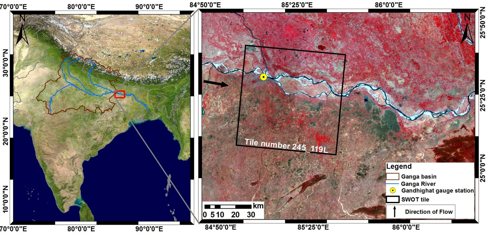
03The idea in one picture
The system has two parts that are built separately and then joined.
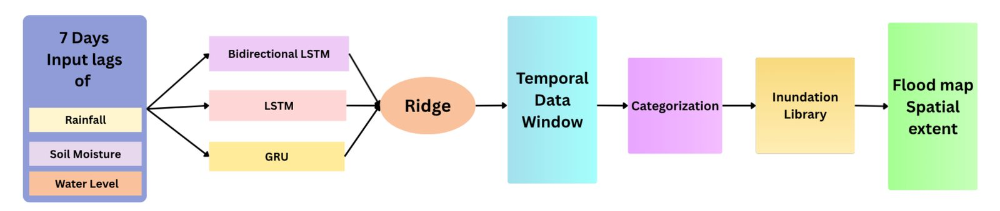
The nice part of this design is that the expensive work, building the flood maps, is done once in advance. At forecast time, the system only has to run a small model and look up a map.
04Data I used
| Data | Source | Resolution | Period | Used for |
|---|---|---|---|---|
| Water level | CWC, Gandhighat gauge | Point, daily | 2011–2025 | Model input, target, categories |
| Rainfall | GSMaP-ISRO (MOSDAC) | 10 × 10 km | 2011–2025 | Model input |
| Soil moisture | SSM/I microwave | 25 × 25 km | 2011–2025 | Model input |
| Sentinel-1 SAR | ESA, C-band VV, via GEE | 10 m | 2015–2025 | Flood library and testing |
| NISAR | NASA-ISRO, L-band HH | 10 m | 31 Aug 2026 | Independent map check |
| SWOT | NASA PO.DAAC, Pass 245 | Pixel cloud | Oct 2023–Mar 2025 | Independent level check |
For the gauge, I kept only the 08:00 IST reading each day, because CWC records hourly in the monsoon but only three times a day the rest of the year. One reading per day keeps the series even across all seasons.
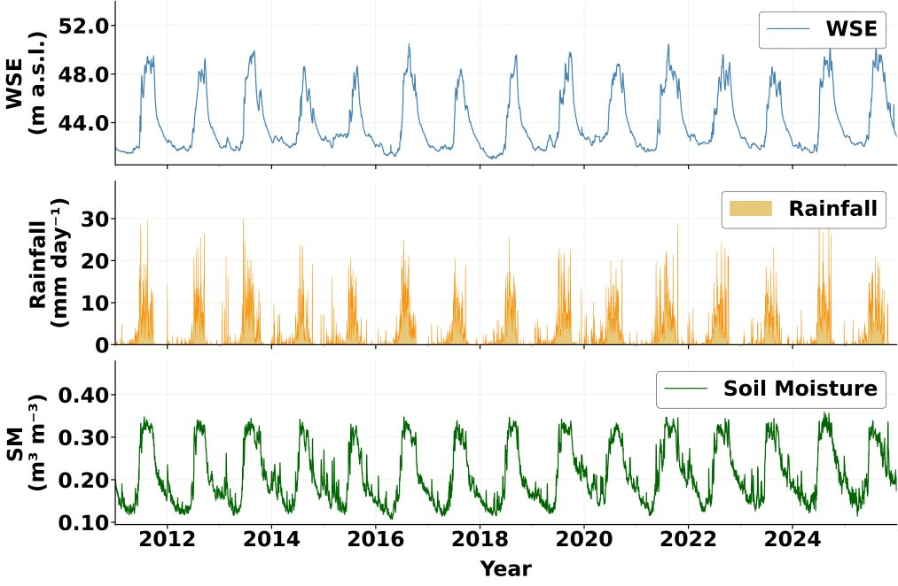
One thing that surprised me: on the same day, soil moisture tracks the river much more closely (r = 0.90) than rainfall does (r = 0.52). That does not mean rain matters less. Rain comes in bursts and reaches the river days later, after soaking through the catchment. When I shifted rainfall back by up to 7 days, its correlation with water level rose from 0.54 to 0.66. That was a good reason to give the model a 7-day window.
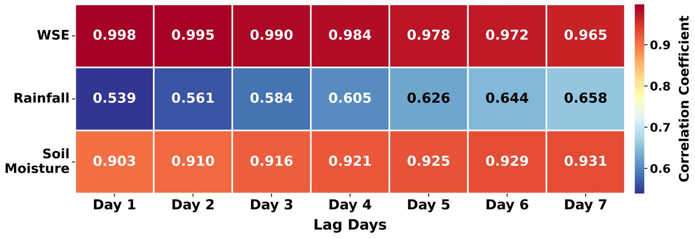
05Forecasting the water level
Preparing the data
I split the 15 years in time order: 70 percent for training, 15 for validation and 15 for testing. The scaler was fitted only on the training part, so nothing from the test period leaked into training. Each sample has 7 days of the three inputs and the next 3 days of water level as the target.
Three base models
I trained three recurrent networks that are good at time series:
- LSTM, which keeps a separate long-term memory and uses gates to decide what to keep and what to forget.
- GRU, a lighter version with only two gates, which trains faster.
- BiLSTM, which reads the 7-day window both forwards and backwards before forecasting.
All three use the same small setup: two layers with 16 and 8 units, dropout of 0.3, Adam optimiser, mean squared error loss, batch size 32 and early stopping after 10 epochs without improvement.
Joining them with Ridge regression
Each model makes different mistakes, so I stacked their nine outputs (3 models × 3 days) into a Ridge regression model. Ridge is plain linear regression with a penalty that stops it from leaning too hard on one input. That matters here, because the three forecasts are very similar to each other.
Results on the test set
| Model | Day 1 NSE | Day 1 MAE (m) | Day 2 NSE | Day 2 MAE (m) | Day 3 NSE | Day 3 MAE (m) |
|---|---|---|---|---|---|---|
| GRU | 0.9850 | 0.231 | 0.9640 | 0.357 | 0.9736 | 0.306 |
| LSTM | 0.9792 | 0.274 | 0.9719 | 0.316 | 0.9741 | 0.301 |
| BiLSTM | 0.9900 | 0.175 | 0.9869 | 0.196 | 0.9826 | 0.226 |
| Ridge ensemble | 0.9921 | 0.148 | 0.9893 | 0.168 | 0.9855 | 0.195 |
NSE = Nash–Sutcliffe Efficiency (1 is perfect). MAE = mean absolute error.
BiLSTM was the best single model, and the Ridge ensemble beat it on every day. Even three days ahead, the average error is under 20 cm.
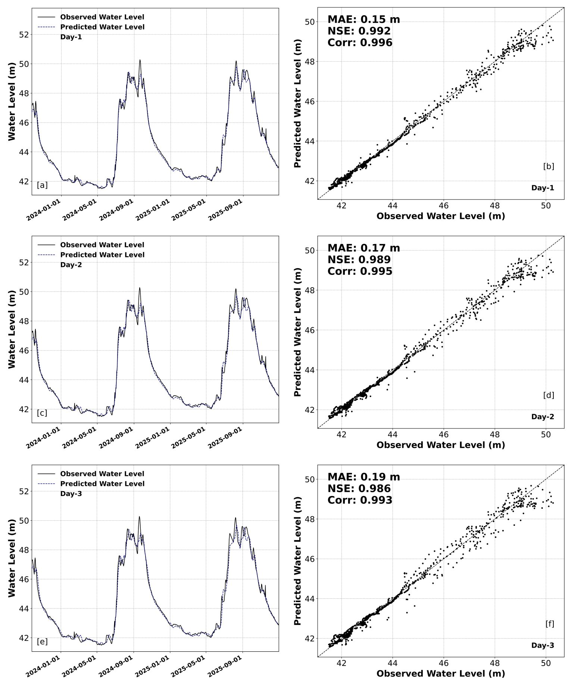
06What the model looks at
A forecast that nobody trusts will not be used in an early warning system. So I used two explainable AI methods, SHAP and LIME, to see which inputs drive each forecast.
| Model | Water level (Day 1 → 3) | Rainfall (Day 1 → 3) | Soil moisture (Day 1 → 3) |
|---|---|---|---|
| GRU | 75.9% → 76.2% | 21.1% → 20.8% | 3.0% → 3.0% |
| LSTM | 73.6% → 67.8% | 22.9% → 26.9% | 3.5% → 5.3% |
| BiLSTM | 73.3% → 69.0% | 19.9% → 23.3% | 6.8% → 7.7% |
Share of total SHAP importance for each input.
Three things stood out:
- Past water level drives most of the forecast. A big river does not change direction overnight.
- Rainfall matters more the further ahead you forecast, at least for LSTM and BiLSTM. The GRU kept leaning on water level, which may be why it did worse on longer forecasts.
- Inside the ensemble, BiLSTM does most of the work, about 45 percent of the Ridge model's SHAP importance, which matches it being the most accurate.
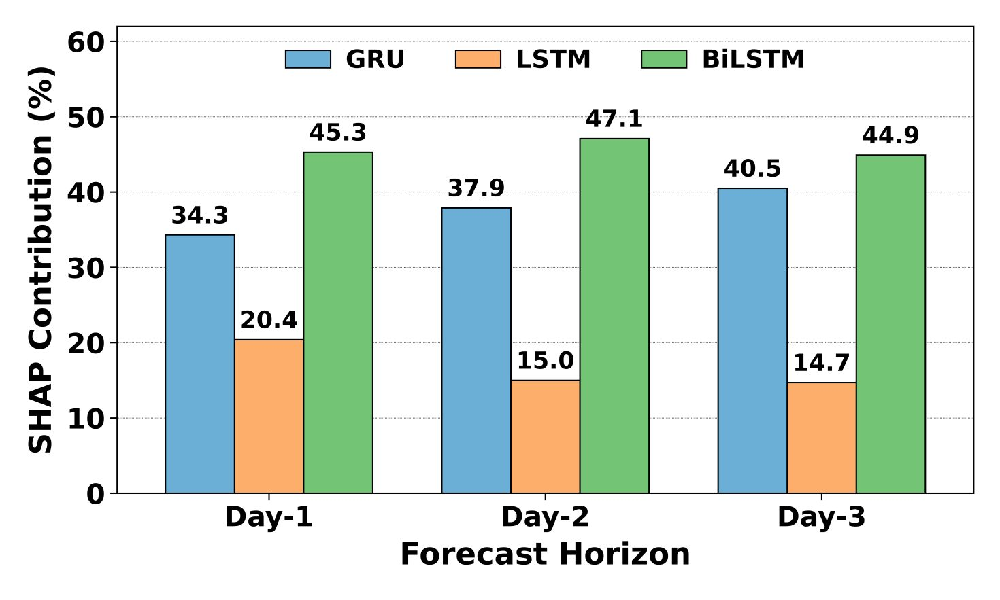
Looking at single flood events was even more useful. On days when the river was rising, rainfall had a much bigger say in the forecast than on days when it was steady near the peak. That is exactly how a hydrologist would expect the river to behave.
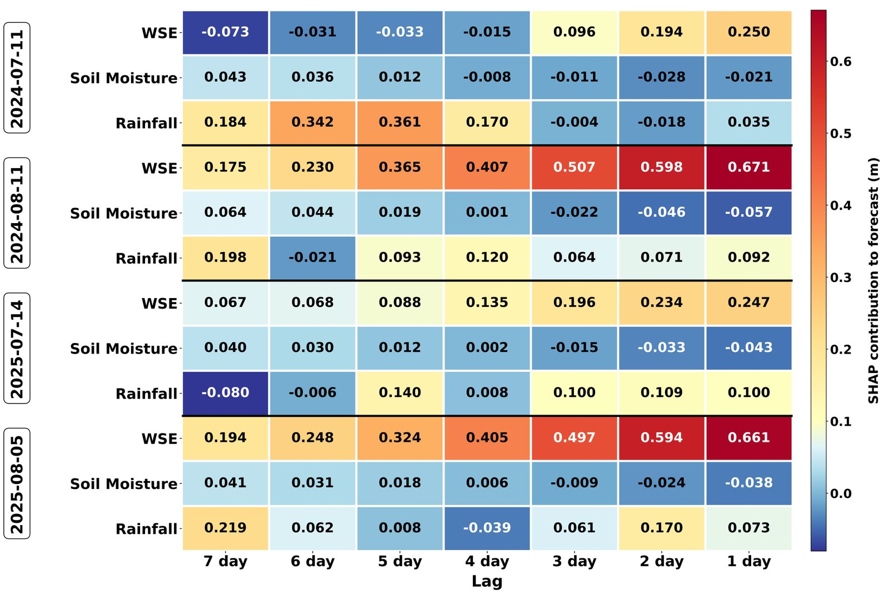
LIME gave almost all the credit to water level for every event. It works by nudging inputs and watching the output, and since nudging water level moves the forecast the most, it misses the indirect effect of rain. For this problem SHAP told a more useful story.
07From a number to a map
This is the part that turns a water level into a picture of the flood.
Five flood categories
CWC gives three levels for Gandhighat: warning (47.60 m), danger (48.60 m) and highest flood level (50.52 m). Those ranges are wide, so I split each in half to get five categories.
| Category | Water level (m) | Meaning |
|---|---|---|
| 1 | 47.10 – 47.60 | Just below warning level |
| 2 | 47.60 – 48.10 | Warning level crossed |
| 3 | 48.10 – 48.60 | Close to danger level |
| 4 | 48.60 – 49.56 | Danger level crossed |
| 5 | 49.56 – 50.52 | Severe, near the record |
Building the inundation library
Sentinel-1 is a radar satellite, so it sees through monsoon clouds, day or night. Calm water bounces the radar signal away and looks dark, while land looks brighter. For every Sentinel-1 image from 2015 to 2023, I used Otsu thresholding in Google Earth Engine to split water from land. Otsu picks a separate cut-off for each image, which helps because land brightness changes with crops and soil wetness through the year.
Each water map was then filed under the category of the gauge reading on that date. Averaging the maps in each category gives the share of times each pixel was flooded, from 0 (never) to 1 (every time). A pixel counts as flooded for that category if it was wet in at least 40 percent of the maps.
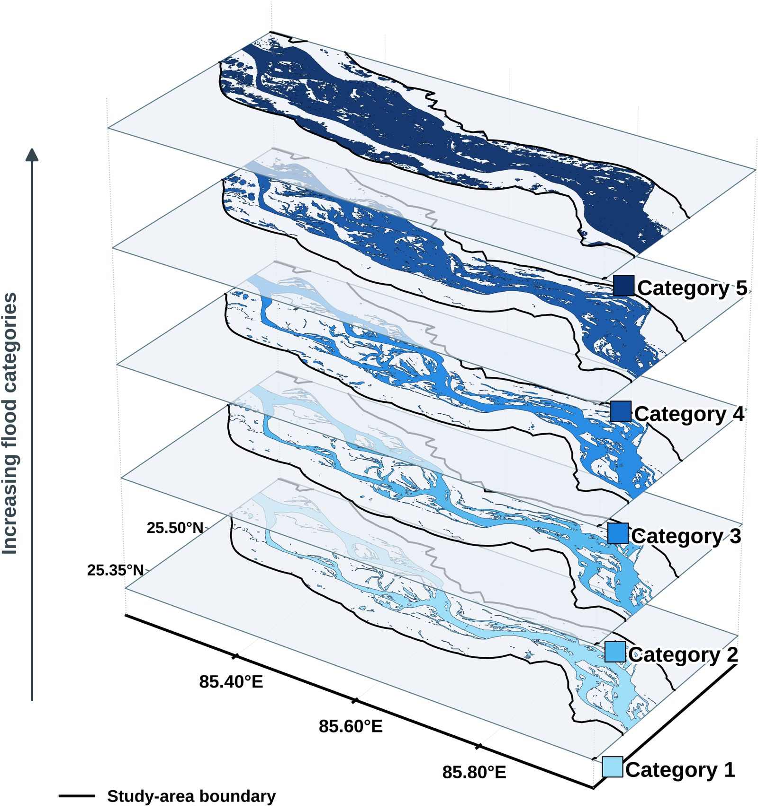
08Testing on real floods
The library was built only from 2015–2023, so I tested it on seven flood events from 2024 and 2025 that it had never seen. For each event, the Ridge forecast picked a category, the library gave a map, and I compared that map pixel by pixel with the Sentinel-1 flood map of the event. Permanent river water was masked out so it would not inflate the score.
| Event | Category | F1 | Precision | Recall |
|---|---|---|---|---|
| 8–20 Aug 2024 | 4 | 0.692 | 0.582 | 0.854 |
| 21 Aug–2 Sep 2024 | 4 | 0.782 | 0.753 | 0.813 |
| 11–14 Sep 2024 | 2 | 0.680 | 0.787 | 0.598 |
| 26–29 Sep 2024 | 3 | 0.722 | 0.944 | 0.585 |
| 5–11 Aug 2025 | 5 | 0.863 | 0.816 | 0.916 |
| 2–12 Sep 2025 | 4 | 0.838 | 0.906 | 0.779 |
| 14–23 Sep 2025 | 4 | 0.717 | 0.678 | 0.761 |
| Average | – | 0.756 | 0.781 | 0.758 |
The bigger the flood, the better the match. The largest event, a Category 5 flood in August 2025, scored the best with an F1-score of 0.863. Smaller floods have fuzzier edges between wet and dry ground, so they are harder to match.
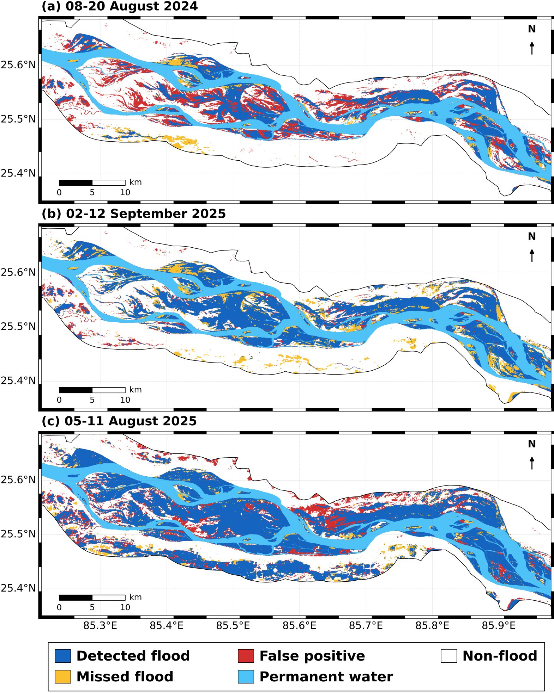
09Checking with SWOT and NISAR
Testing against the same kind of data you trained on only goes so far. So I checked the system against two newer satellites that have nothing to do with the gauge or with Sentinel-1.
SWOT: does the forecast level match the satellite level?
SWOT measures the height of the water surface from space. I took its pixel cloud for Pass 245, cleaned it with its quality flags, corrected for the geoid and tides, and read the water level at a virtual station at Gandhighat on every pass.
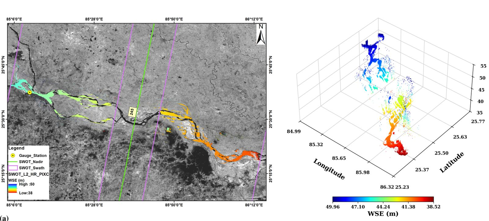
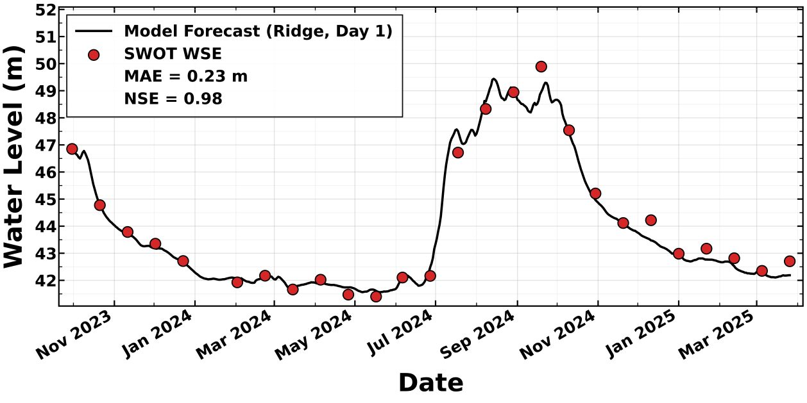
NISAR: does the flood map match a different radar?
NISAR is the new NASA–ISRO radar mission. It uses L-band, a longer wavelength than Sentinel-1's C-band, so it is a truly independent check. On 31 August 2026 the river was in Category 4. I made a flood map from the NISAR image and compared it with the Category 4 library map.
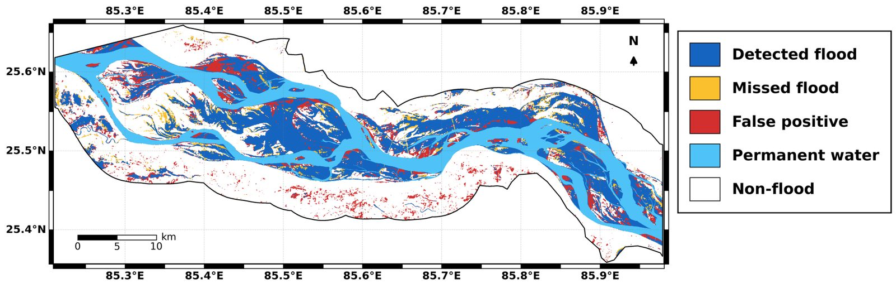
Two satellites that never fed into the system, one measuring height and one measuring extent, both agree with it. That is the strongest evidence I have that the approach works.
10Where it falls short
- Category edges. If the river sits right at the line between two categories, a small error can pick the wrong map. In two of five large floods, the first day was put in the wrong category, though the following days were right.
- New flood paths. The library only knows where the river has flooded before. If it breaks into a new area, the system cannot show it.
- Steps, not a slope. Real water levels change smoothly, but the maps come in five fixed steps, which can cause some over- or under-prediction near the ends of each step.
11What I learned
- A simple model on top of good models goes a long way. The Ridge ensemble added only a few lines of code and beat every deep network.
- Explainability is not just for show. SHAP confirmed the model was using rainfall the way the river actually responds, which gave me more confidence than any error score.
- Validation is worth the most effort. Checking against SWOT and NISAR, which use completely different data, was more convincing than any number of runs on the same dataset.
- Satellite flood libraries are a cheap and practical way to get flood maps where detailed elevation data is not available.
This work was done during my 7th semester internship (registered title: Flood Inundation, Hydrology) with the Land Hydrology Division, Space Applications Centre (ISRO), Ahmedabad. Many thanks to my guides, Dr. Amit Kumar Dubey and Prof. Dheeraj Shringi, for their support throughout.
—References
- S. Hochreiter and J. Schmidhuber, "Long Short-Term Memory", Neural Computation, 9(8), 1997.
- K. Cho et al., "Learning Phrase Representations using RNN Encoder-Decoder for Statistical Machine Translation", EMNLP, 2014.
- A. E. Hoerl and R. W. Kennard, "Ridge regression: biased estimation for nonorthogonal problems", Technometrics, 12(1), 1970.
- M. C. Modi et al., "Deep learning based multi-model ensemble approach for flood forecasting over flood prone rivers of India", Discover Water, 6, 2026.
- S. M. Lundberg and S.-I. Lee, "A unified approach to interpreting model predictions", NeurIPS, 2017.
- M. T. Ribeiro, S. Singh and C. Guestrin, "Why should I trust you?", ACM SIGKDD, 2016.
- N. Otsu, "A Threshold Selection Method from Gray-Level Histograms", IEEE Trans. SMC, 9(1), 1979.
- N. Gorelick et al., "Google Earth Engine: Planetary-scale geospatial analysis for everyone", Remote Sensing of Environment, 202, 2017.
- S. Biancamaria, D. P. Lettenmaier and T. M. Pavelsky, "The SWOT mission and its capabilities for land hydrology", Surveys in Geophysics, 37, 2016.
- A. K. Dubey et al., "Evaluating SWOT capabilities for spatiotemporal river discharge estimation over the Ganga River in northern India", J. Hydrologic Engineering, 31(5), 2026.
- A. Chowdhury, "Technical overview of ISRO and NASA's first joint mission: NISAR", Acceleron Aerospace Journal, 3(5), 2024.